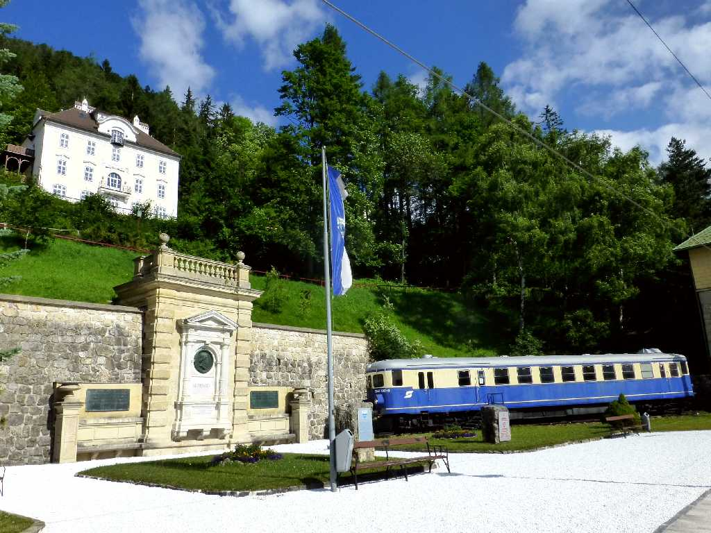
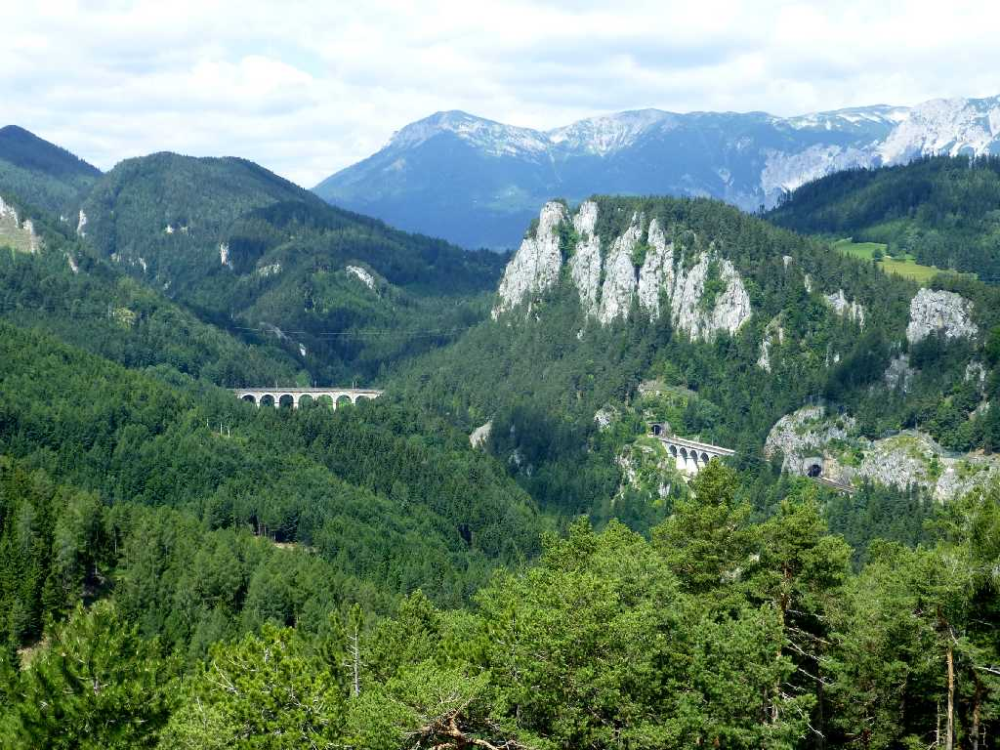
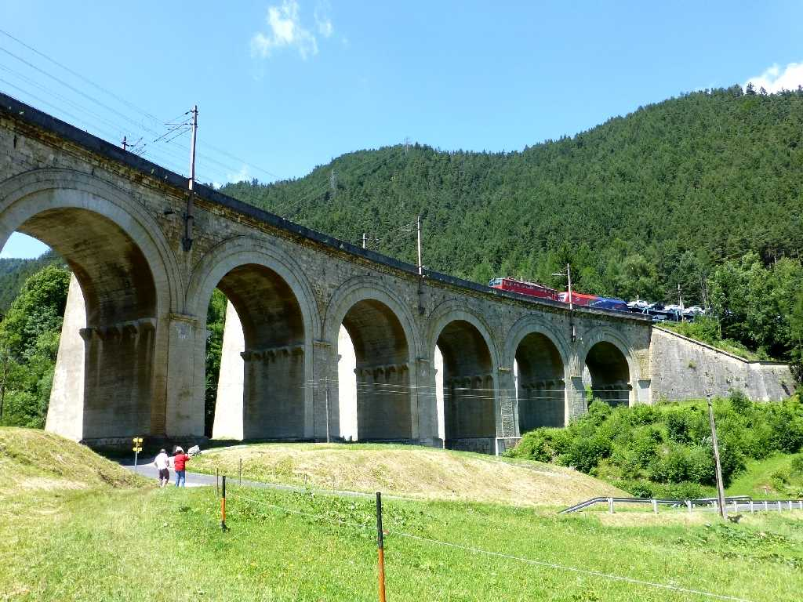
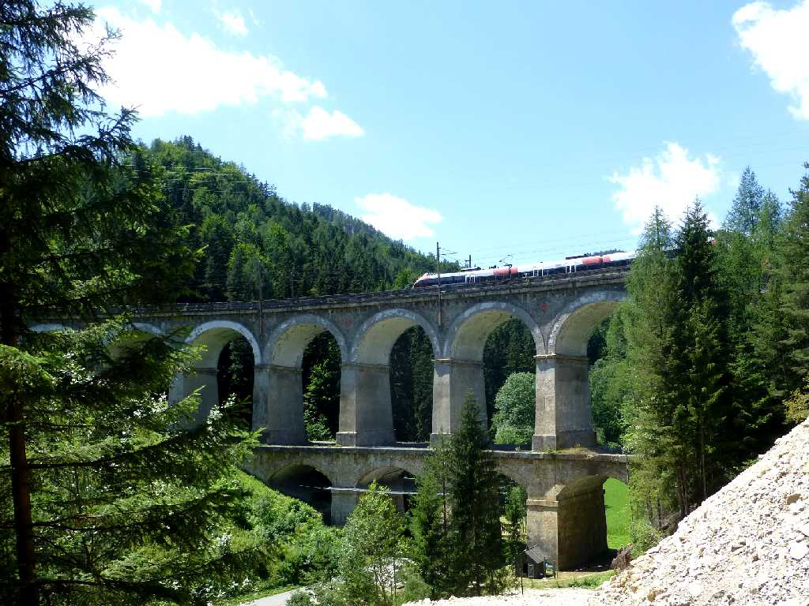
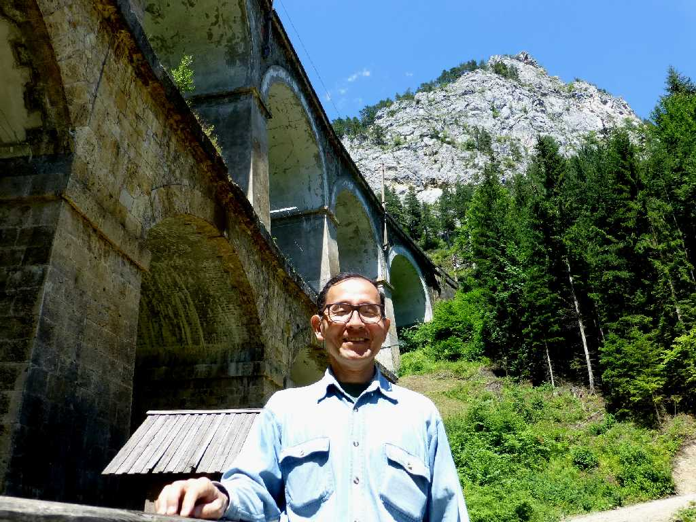
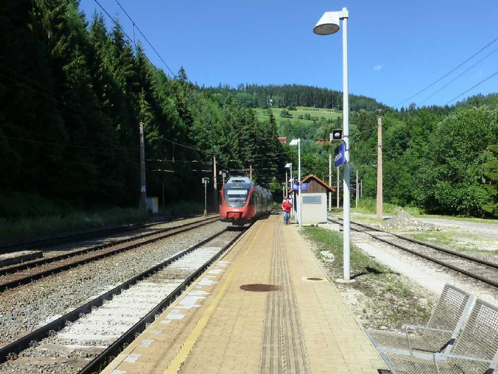

Bahnhof Semmering Semmeringbahn
世界初の山岳鉄道であるゼメリング鉄道のゼメリング駅

Semmeringbahn
見晴台からゼメリング鉄道を望む 左石橋はカルテリンネ橋

Viadukt Semmeringbahn
Bogen Viadukt Semmeringbahn

Kalte Rinne Viadukt Semmeringbahn
ゼメリング駅からオーストリアアルプスを眺めながら山道をゆっくり３時間トレッキングして二重アーチ鉄道石橋の美しいカルテリンネ橋に到着

Kalte Rinne Viadukt Semmeringbahn

July 10 2015 Kalte Rinne Viadukt Semmeringbahn

Doppel Bogen Viadukt Semmeringbahn

Bahnhof Breitenstein Semmeringbahn
美しいオーストリアアルプスと二重アーチ鉄道石橋を観ながら２駅トレッキングしてウィーンに戻る